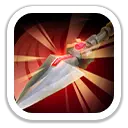
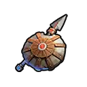

Ахмос — мифический пехотный герой 4 поколения и один из самых выраженных защитных фронтовиков своего этапа игры. В Освоении он закрывает команду щитом, становится неуязвимым и лечится, а в Экспедиции значительно усиливает выживаемость и урон пехоты.
ПолучениеКороль ледяных полей, Состояние власти, Ежедневные предложения и более поздние источники поколения
Главная специализацияГарнизон, PvP, пехотный марш
Лучше всегоОборона, затяжной PvP, Арена
ОсобенностьОчень высокая защита пехоты и окно неуязвимости
Характеристики
Максимальные базовые характеристики героя.
3 150Атака героя
4 106Защита героя
61 604Здоровье героя
370.29%Атака пехоты
370.29%Защита пехоты
Роль Ахмоса: это не герой взрывного личного урона. Его сила в том, что он переживает тяжёлый фронтовой обмен, прикрывает союзников и делает пехоту заметно устойчивее.
Навыки Освоения
Используются в Арене, Освоении и боях героев.
Защита Ктугхи
Неуязвимость и защита
Ахмос прикрывается щитом и на 2 секунды становится неуязвимым. В этот момент он не двигается и не применяет навыки, зато невосприимчив к контролю и снижает урон, получаемый ближайшими союзниками.
−30 / −40 / −50 / −60 / −70% получаемого урона

Клинок рассвета
Урон и уязвимость цели
Ахмос пронзает врагов перед собой копьём и на 2 секунды заставляет поражённые цели получать на 20% больше урона.
Важно: Ахмос раскрывается прежде всего в пехотном составе. Его ключевые экспедиционные бонусы гораздо ценнее для пехоты, чем для смешанного марша, поэтому оценивать его как универсального героя для всех типов войск неправильно.
Эксклюзивное снаряжение

Реликвия стража
Эксклюзивное снаряжение Ахмоса усиливает его защитную роль и дополнительно укрепляет гарнизон.
+638Атака
+832Защита
+12 487Здоровье
+92.5%Смертоносность пехоты
+92.5%Здоровье пехоты
Несгибаемая решимостьНа 5 уровне повышает атаку союзных войск под действием «Защиты Ктугхи» на 42% на 2,5 секунды.
Клятва стражаНа 5 уровне повышает здоровье защитных войск в гарнизоне на 15%.
Приоритет прокачки
Что сильнее всего раскрывает Ахмоса.
1Защита КтугхиГлавный навык Ахмоса в Арене и Освоении: неуязвимость и до −70% урона по ближайшим союзникам.
2Строй гадюкиГлавный защитный экспедиционный навык, особенно мощный в пехотных боях.
3Молитва пламениДаёт огромный прирост урона пехоты и превращает Ахмоса из чистого щита в полноценного пехотного усилителя.
Эксклюзивное снаряжение: особенно ценно для игроков, которые используют Ахмоса в гарнизоне. «Клятва стража» напрямую усиливает здоровье защитников, а «Несгибаемая решимость» превращает защитное окно в короткий атакующий всплеск.
Где использовать Ахмоса
Гарнизон
Одна из лучших ролей Ахмоса. Его защитный набор, пехотная устойчивость и «Клятва стража» делают его естественным кандидатом для обороны.
PvP
Очень хорош в пехотном марше и затяжных боях. Снижает входящий урон и одновременно усиливает урон своей пехоты.
Арена
Силен как передний танк: 2 секунды неуязвимости, защита ближайших союзников и последующее самолечение позволяют переживать тяжёлый стартовый урон.
Свирепый медведь
Не лучший герой для присоединения к чужому сбору: его первый навык Экспедиции защитный. Для Медведя обычно выгоднее герои с прямым бонусом к урону в первом навыке.
Плюсы и минусы
Плюсы
Очень сильный фронтовик 4 поколения.
До 2 секунд полной неуязвимости в Освоении.
До −70% входящего урона по ближайшим союзникам.
Очень мощное усиление пехоты в Экспедиции.
Хорош в гарнизоне и затяжном PvP.
Имеет самолечение и уязвимость цели.
Минусы
Сильно завязан именно на пехоту.
Не лучший участник чужого сбора на Свирепого медведя.
Личный урон ниже, чем у чистых атакующих героев.
Полный потенциал гарнизона требует эксклюзивного снаряжения.
Позднее уступает место более новым пехотным героям.
Стоит ли прокачивать Ахмоса?
Да, если нужен сильный пехотный фронтовик и защитник. В рамках 4 поколения Ахмос особенно полезен игрокам, которым важны гарнизон, PvP и Арена. Если же главная цель — только Свирепый медведь и максимальный урон сборов, приоритет стоит отдавать героям с более прямыми атакующими бонусами.
Источники
Механики и значения сверены по актуальным базам на 23 октября 2026 года.